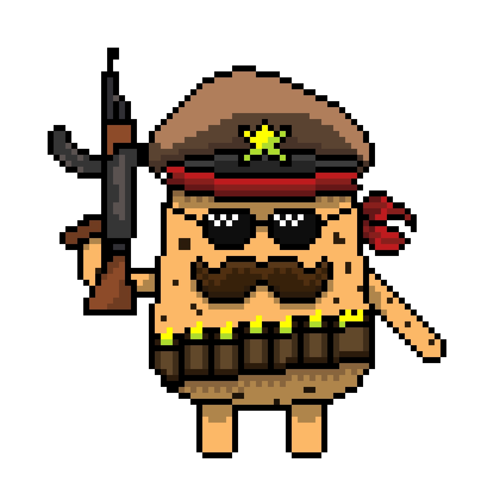
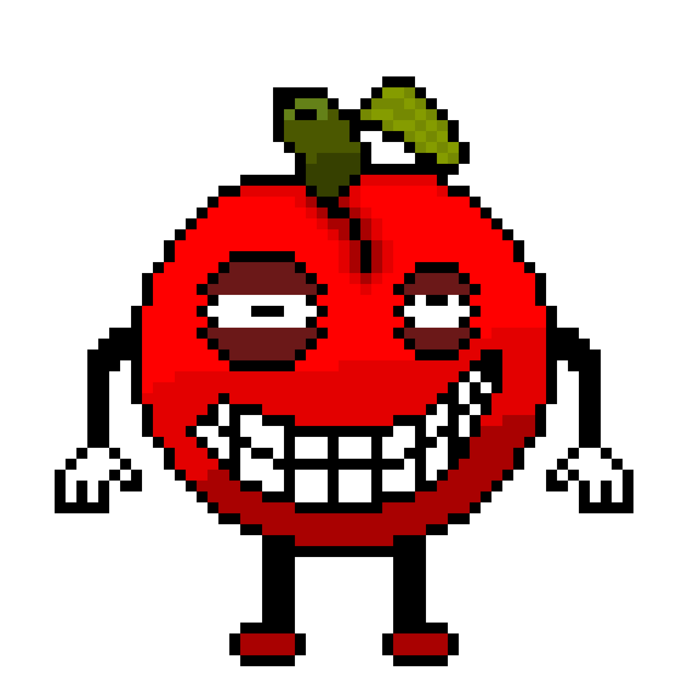
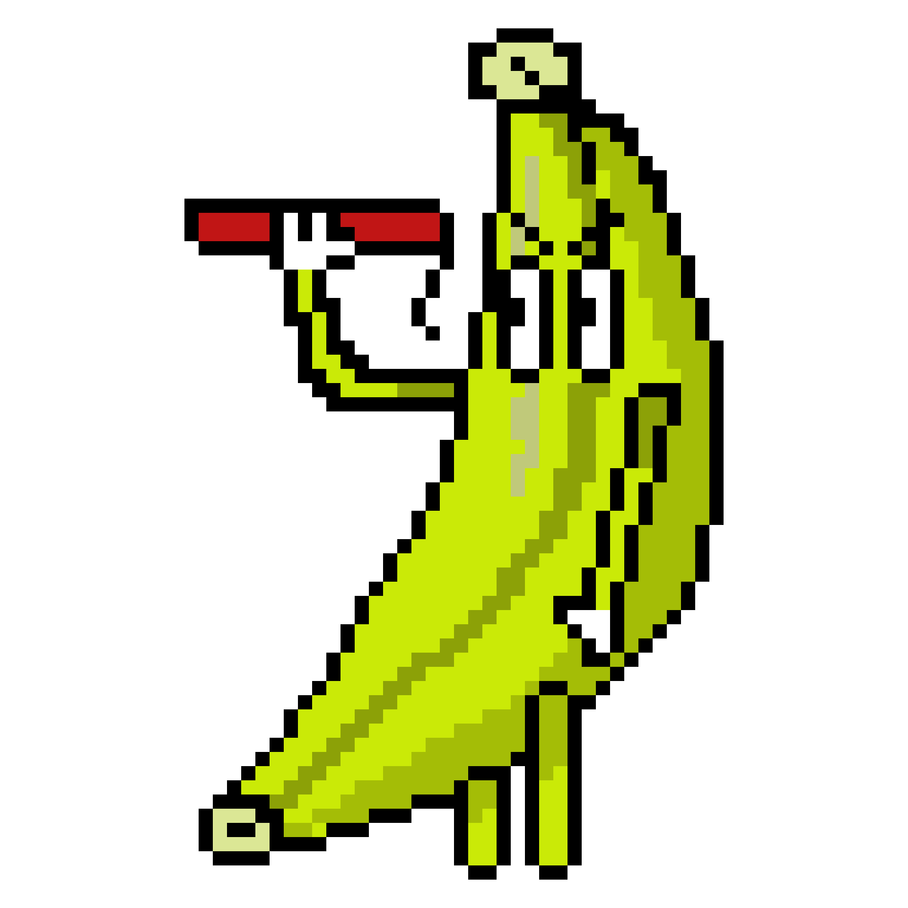
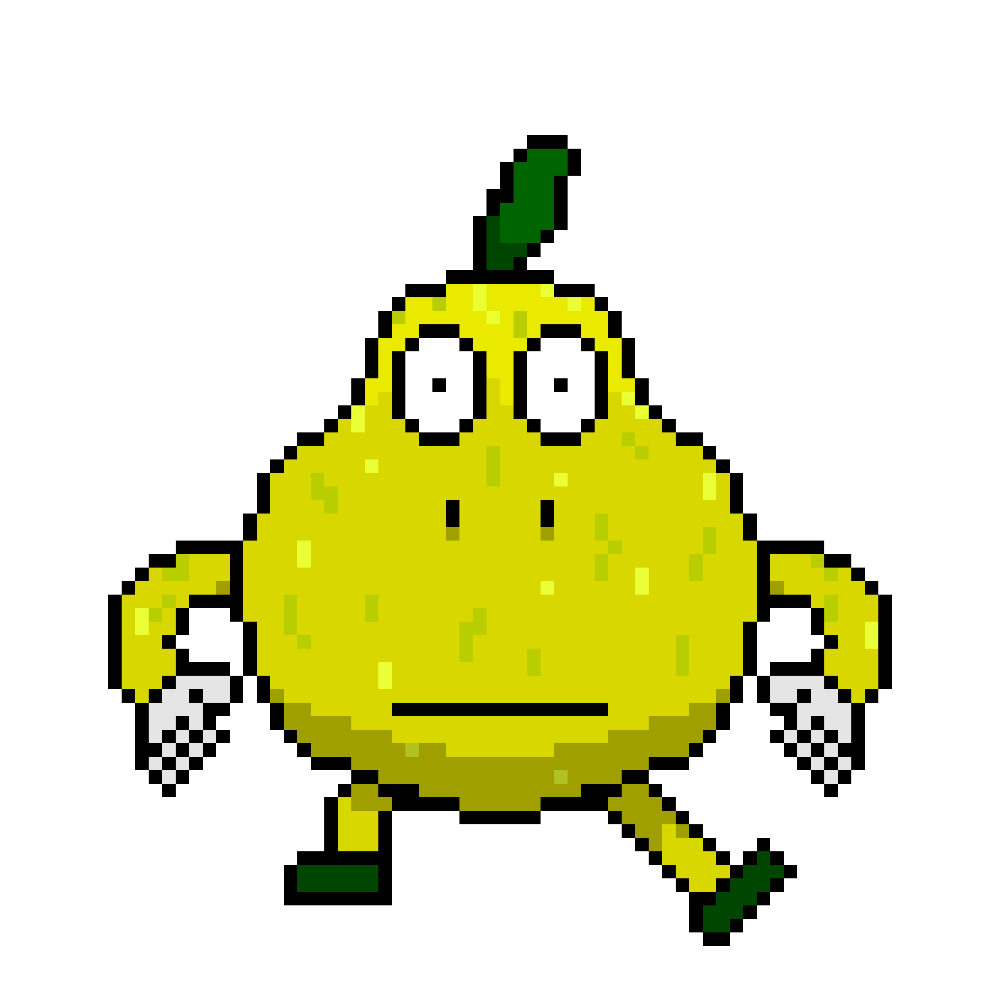

A muito tempo dois tipos de batatas se uniram e viveram bem por muito tempo. Mas, um dia ouve uma traição e todas as batatas inglesas foram aprisionadas e seu lider foi perdido nos terrores do mundo

Um grande líder e general do império Solanum tuberosum que foi traído pelo seu amigo o general do império Ipomoea batatas.
Ademais, foi incurralado e abandonado nos terrores do mundo glicose mas, ele vai voltar e reconquistar o seu reino e povo novamente.

Do reino Malus domestica Borkh é uma maçã e portanto é rápida, louca e vai correr até você!

Do reino Musa spp são bananas especialistas em explosivos e quando verem um inimigo vão jogar banana(TNT) neles

Do grande ímperio Pyrus, O reino das Pêras, são otimos voadores e especialistas em perseguição aéria